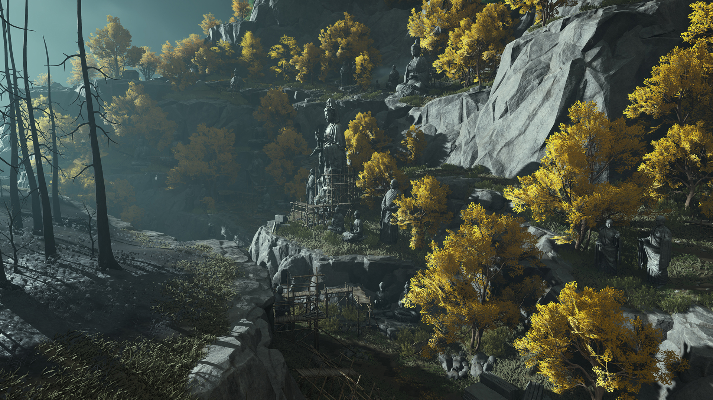

Combat Builds
Martial Arts Build Guide
Use this page as the crawlable build database. The homepage keeps an interactive comparer, while this page exposes the core build archetypes directly in HTML for players and search engines.

Official Visual Context
Weapon Pairs Before Tier Lists
Build planning starts with the weapon pair and the content type you actually play. This page keeps each recommendation tied to role, stat priority, loop, replacement logic, and use case instead of presenting a naked tier label.
Source: official website media screenshot, image saved locally
How To Read A Combo
Pick By Rhythm, Then By Tier
A good martial arts recommendation tells you what the build feels like under pressure. The internal cards now separate opener, key window, pressure type, failure signal, and score bars so players can pick a route they can actually execute.
Openersafe poke / pre-buff / spacing test
Key Windowdodge, parry, stance break, teammate setup
Failure Signalstamina empty, burst too early, heal too late
Replacement Rulereplace by function before chasing rarity
Build Pairing Workbench
Read A Pair Like A Loadout, Not A Rank
The best recommendation is not the highest tier. It is the pair whose opener, key window, stat pressure, and failure signal match the player behind the keyboard.
1Weapon IdentityDoes the pair solve range, break, sustain, or burst?
2Execution CostCan you repeat the loop under latency and boss movement?
3Upgrade SafetyCan weak pieces be replaced by function?
4Failure SignalDo you know when the route is breaking down?
Nameless Sword + Nameless Spear
Balanced DPS for new players. Prioritize ATK, Crit Rate, and Precision. Use Nameless Heart, Yi Shui Song, and Wei Meng Song.
- Best for first week progression and story.
- Simple swap timing after dodge or break windows.
- Safe default when you do not know your final role yet.
Strategic Sword + Heavenquaker Spear
Burst DPS for players comfortable with setup windows. Prioritize Crit Rate, Crit DMG, and ATK.
- Strong dungeon and boss burst.
- Requires cleaner timing than starter sword routes.
- Good pick when team utility is already covered.
Panacea Fan + Soulshade Umbrella
Support and healer route. Prioritize Healing, HP, and DEF while maintaining safe ranged uptime.
- Useful for group content and hard progression.
- Offers shields, sustain, and recovery windows.
- Lower pressure for players learning encounters.
Stormbreaker Spear + Thundercry Blade
Tank route with high mitigation and stable boss control. Prioritize DEF, HP, and Block.
- Best for frontline players.
- Forgiving in repeated dungeon runs.
- Works well when paired with ranged support.
Infernal Twinblades + Mortal Rope Dart
Fast DPS and PvP pressure build. Prioritize ATK Speed, Crit, and ATK.
- High APM and high pursuit value.
- Excellent for skirmish players.
- Less forgiving when stamina is mismanaged.
Shadow Rope + Thunder Blade
Skirmisher route for spacing, mobility, and punish timing. Prioritize Crit, Mobility, and Penetration.
- Strong in small-scale PvP.
- Rewards hit-and-run discipline.
- Good counter-pick practice build.
How To Read Build Ratings
PvE and PvP scores are route helpers, not patch-proof math. Use them to choose a practice target, then adjust around latency, survivability, and the content you repeat most.
Replacement Rules
If a recommended heart method or stat piece is unavailable, replace by function first: sustain for sustain, break for break, burst for burst, and comfort stats for learning bosses.
Next Reading
The article library contains 35 dedicated build pages with step-by-step loops, common mistakes, checklists, and source notes.
Browse Build Articles
| Build | Role | Weapons | Stat Priority | Use Cases |
|---|
| Moonveil Fan + Jade Umbrella | Control Support | Fan + Umbrella | Cooldown > Healing > HP | Group routes, control, off-heal support |
| Snowparting Blade + Phalanx Spear | Boss Breaker | Blade + Spear | Break > ATK > Crit Rate | Weekly bosses, stance break, material farming |
| Ironwall Mo Blade + Nameless Spear | Frontline | Mo Blade + Spear | HP > DEF > Block | Boss learning, low-risk tanking |
| Silk Fan + Nameless Sword | Solo Sustain | Fan + Sword | ATK > Healing > Crit Rate | Solo story, emergency sustain |
| Bellstrike Umbra + Ten Directions | Bruiser | Blade + Mo Blade | ATK > Crit > Penetration | Flexible blade play, stagger control |